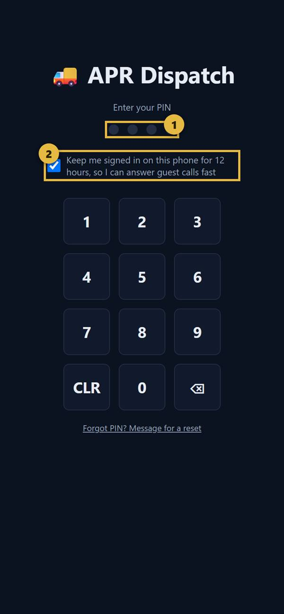
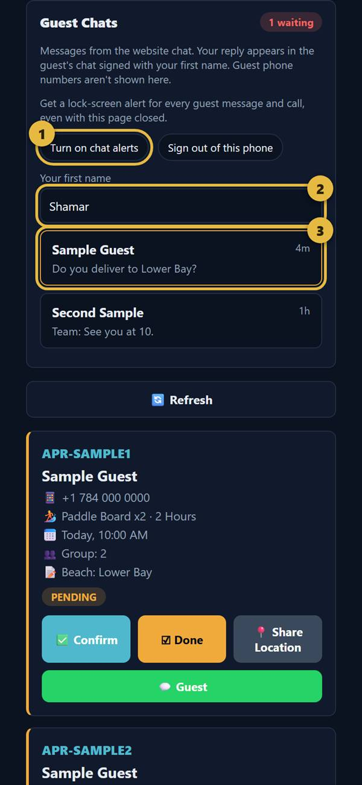
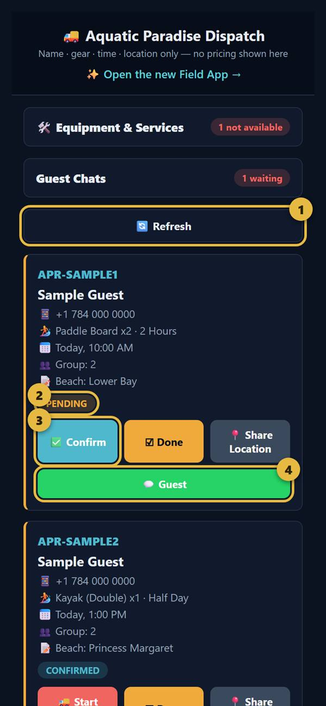
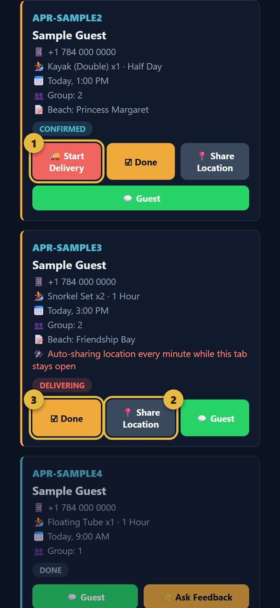
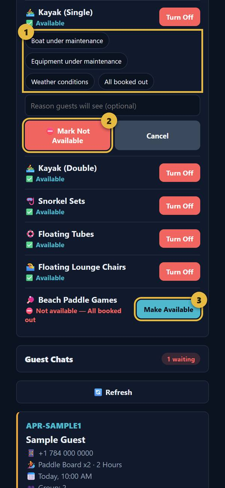
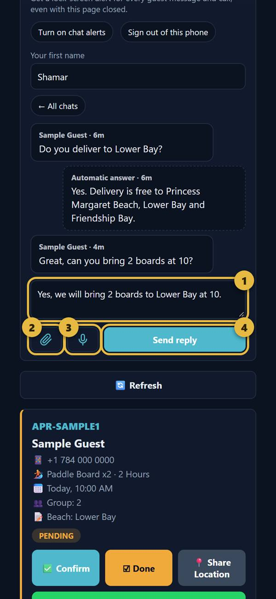
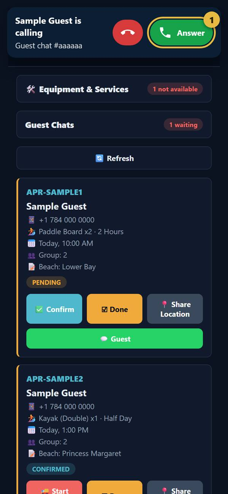

1. Open the app and sign in
Open the staff appSave it to your phone so it opens like an app. iPhone: in Safari tap Share, then Add to Home Screen. Android: in Chrome tap the three dots, then Add to Home screen.

- 1Enter your 4-digit staff PIN. Delroy gives it to you in person or on a call. It is never in an email.
- 2On your own phone, tick this box before entering the PIN. You stay signed in for 12 hours, so guest calls can reach you.
2. Turn on alerts
Do this once on your phone, so a guest message or call reaches you even with the app closed.

- 1Open Guest Chats, tap Turn on chat alerts, then tap Allow when your phone asks.
- 2Type your first name. Guests see it on your replies.
- 3Tap a chat to open it. "Waiting" at the top means a guest needs an answer.
3. Handle a booking
Each card shows the guest, gear, time, group size and notes. Prices aren't shown here. Every booking moves through these steps:

- 1Refresh loads the newest bookings.
- 2This shows where the booking is now. Pending means a guest is waiting for an answer.
- 3Check you have the gear for that time, then tap Confirm.
- 4Guest opens WhatsApp to message them. If there is no phone number, this button doesn't appear.

- 1When you leave with the gear, tap Start Delivery. Allow location if your phone asks. Your location is shared every minute while the app stays open on your screen.
- 2Share Location sends your position once, any time you need to.
- 3When the gear is back and checked, tap Done. This frees the gear for other guests. Don't tap it early.
After Done, Ask Feedback opens a ready-made WhatsApp message asking the guest for a review.
4. Turn gear off or on
Use this when something can't go out, such as a repair or bad weather. Guests see "Not available at the moment" with your reason straight away.

Open Equipment & Services and tap Turn Off next to the item. Then:
- 1Tap a reason, or type your own in the box below.
- 2Tap Mark Not Available.
- 3When it's ready again, tap Make Available. Don't forget this step, or guests can't book it.
5. Answer guest chats

- 1Type your reply here.
- 2Send a photo or file.
- 3Tap to record a voice note, and tap again to send it. Up to 60 seconds.
- 4Send reply sends it, signed with your first name.
"Automatic answer" messages come from our price list and rules. Read them, then follow up if the guest needs more.
6. Answer a guest call
Guests can call free from the website chat. It rings for 60 seconds.

- 1Tap Answer, and allow the microphone the first time. If your phone is locked, tap the alert to open the call.
The red button only hides the ring on your phone. If nobody answers, the guest can leave a voice message. Calls aren't recorded.
7. Rules to remember
- Every guest on the water wears a life jacket. No exceptions.
- Check the wind with the anemometer before and after each rental. If it picks up, call the renter.
- Clean masks and fins before and after every use.
- Each board has its own fins and paddle. Don't mix parts.
- The Explorer 300 is our support boat. It is never rented.
- Guest details are private. Use them for the booking only, and don't save guests' numbers for yourself.
- Never ask a guest for a card number or banking password.
8. If something goes wrong
- Nothing updates: tap Refresh, then check your signal.
- "New version ready" appears: finish what you're doing, then tap Refresh. The link stays the same.
- "Wrong PIN" or forgot your PIN: tap "Forgot PIN?" on the sign-in screen to message Delroy.
- Double booking, or no gear for a guest: message the guest, then tell Delroy straight away.
- Any safety problem on the water: deal with the guest's safety first, then call Delroy.
Delroy on WhatsApp: +1 784 496 3447